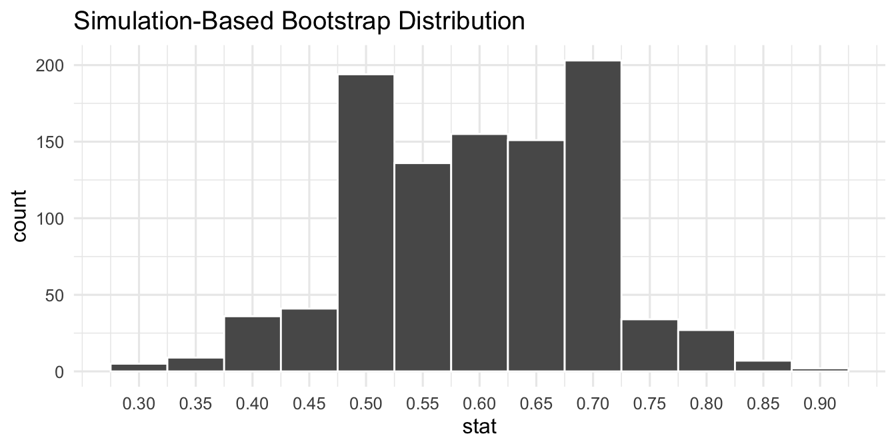
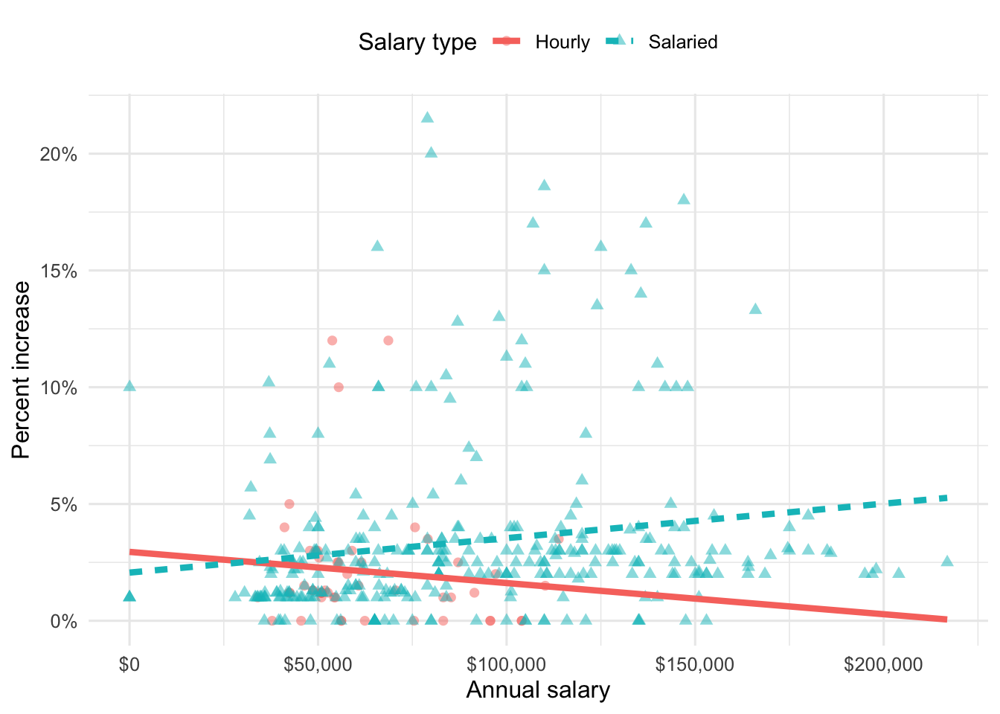
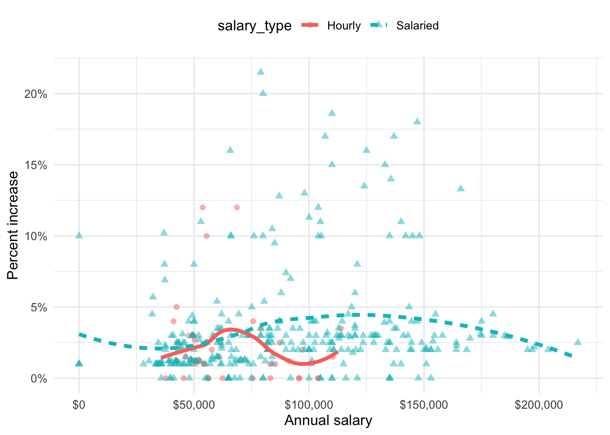
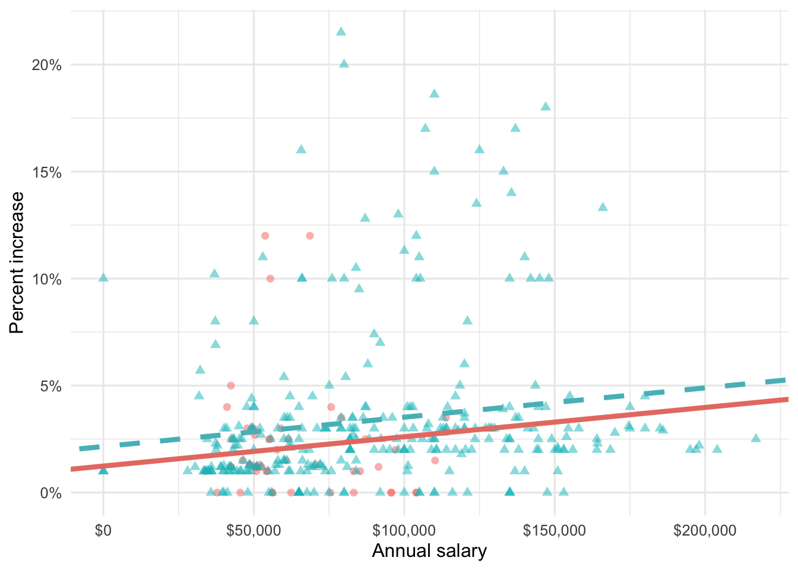
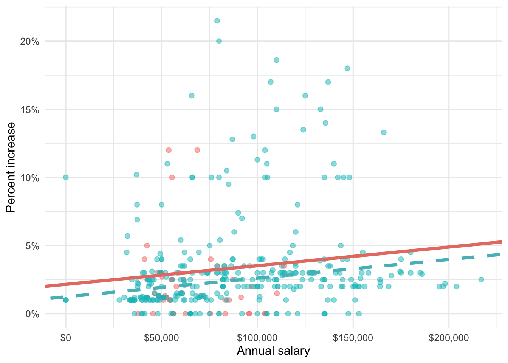

Exam 2 Review
Note
Suggested answers can be found here, but resist the urge to peek before you go through it yourself.
Part 1 - Employment
A large university knows that about 70% of the full-time students are employed at least 5 hours per week. The members of the Statistics Department wonder if the same proportion of their students work at least 5 hours per week. They randomly sample 25 majors and find that 15 of the students (60%) work 5 or more hours each week.
Question 1
Describe how you can set up a simulation to estimate the proportion of statistics majors who work 5 or more hours each week based on this sample.
Question 2
A bootstrap distribution with 1000 simulations is shown below. Approximate the bounds of the 95% confidence interval based on this distribution.
Question 3
Suppose the lower bound of the confidence interval from the previous question is L and the upper bound is U. Which of the following is correct?
a. Between L to U of statistics majors work at least 5 hours per week.
b. 95% of the time the true proportion of statistics majors who work at least 5 hours per week is between L and U.
c. Between L and U of random samples of 25 statistics majors are expected to yield confidence intervals that contain the true proportion of statistics majors who work at least 5 hours per week.
d. 95% of random samples of 25 statistics majors will yield confidence intervals between L and U.
e. None of the above.
Part 2 - Blizzard
In 2020, employees of Blizzard Entertainment circulated a spreadsheet to anonymously share salaries and recent pay increases amidst rising tension in the video game industry over wage disparities and executive compensation. (Source: Blizzard Workers Share Salaries in Revolt Over Pay)
The name of the data frame used for this analysis is blizzard_salary and the variables are:
percent_incr: Raise given in July 2020, as percent increase with values ranging from 1 (1% increase to 21.5 (21.5% increase)salary_type: Type of salary, with levelsHourlyandSalariedannual_salary: Annual salary, in USD, with values ranging from $50,939 to $216,856.performance_rating: Most recent review performance rating, with levelsPoor,Successful,High, andTop. ThePoorlevel is the lowest rating and theToplevel is the highest rating.
The top ten rows of blizzard_salary are shown below:
# A tibble: 409 × 4
percent_incr salary_type annual_salary performance_rating
<dbl> <chr> <dbl> <chr>
1 1 Salaried 1 High
2 1 Salaried 1 Successful
3 1 Salaried 1 High
4 1 Hourly 33987. Successful
5 NA Hourly 34798. High
6 NA Hourly 35360 <NA>
7 NA Hourly 37440 <NA>
8 0 Hourly 37814. <NA>
9 4 Hourly 41101. Top
10 1.2 Hourly 42328 <NA>
# ℹ 399 more rowsQuestion 4
Next, you fit a model for predicting raises (percent_incr) from salaries (annual_salary). We’ll call this model raise_1_fit. A tidy output of the model is shown below.
# A tibble: 2 × 5
term estimate std.error statistic p.value
<chr> <dbl> <dbl> <dbl> <dbl>
1 (Intercept) 1.87 0.432 4.33 0.0000194
2 annual_salary 0.0000155 0.00000452 3.43 0.000669 Which of the following is the best interpretation of the slope coefficient?
- For every additional $1,000 of annual salary, the model predicts the raise to be higher, on average, by 1.55%.
- For every additional $1,000 of annual salary, the raise goes up by 0.0155%.
- For every additional $1,000 of annual salary, the model predicts the raise to be higher, on average, by 0.0155%.
- For every additional $1,000 of annual salary, the model predicts the raise to be higher, on average, by 1.87%.
Question 5
You then fit a model for predicting raises (percent_incr) from salaries (annual_salary) and performance ratings (performance_rating). We’ll call this model raise_2_fit. Which of the following is definitely true based on the information you have so far?
- Intercept of
raise_2_fitis higher than intercept ofraise_1_fit. - Slope of
raise_2_fitis higher than RMSE ofraise_1_fit. - Adjusted \(R^2\) of
raise_2_fitis higher than adjusted \(R^2\) ofraise_1_fit. - \(R^2\) of
raise_2_fitis higher \(R^2\) ofraise_1_fit.
Question 6
The tidy model output for the raise_2_fit model you fit is shown below.
# A tibble: 5 × 5
term estimate std.error statistic p.value
<chr> <dbl> <dbl> <dbl> <dbl>
1 (Intercept) 3.55 0.508 6.99 1.99e-11
2 annual_salary 0.00000989 0.00000436 2.27 2.42e- 2
3 performance_ratingPoor -4.06 1.42 -2.86 4.58e- 3
4 performance_ratingSuccessful -2.40 0.397 -6.05 4.68e- 9
5 performance_ratingTop 2.99 0.715 4.18 3.92e- 5When your teammate sees this model output, they remark “The coefficient for performance_ratingSuccessful is negative, that’s weird. I guess it means that people who get successful performance ratings get lower raises.” How would you respond to your teammate?
Question 7
Ultimately, your teammate decides they don’t like the negative slope coefficients in the model output you created (not that there’s anything wrong with negative slope coefficients!), does something else, and comes up with the following model output.
# A tibble: 5 × 5
term estimate std.error statistic p.value
<chr> <dbl> <dbl> <dbl> <dbl>
1 (Intercept) -0.511 1.47 -0.347 0.729
2 annual_salary 0.00000989 0.00000436 2.27 0.0242
3 performance_ratingSuccessful 1.66 1.42 1.17 0.242
4 performance_ratingHigh 4.06 1.42 2.86 0.00458
5 performance_ratingTop 7.05 1.53 4.60 0.00000644Unfortunately they didn’t write their code in a Quarto document, instead just wrote some code in the Console and then lost track of their work. They remember using the fct_relevel() function and doing something like the following:
blizzard_salary <- blizzard_salary |>
mutate(performance_rating = fct_relevel(performance_rating, ___))What should they put in the blanks to get the same model output as above?
- “Poor”, “Successful”, “High”, “Top”
- “Successful”, “High”, “Top”
- “Top”, “High”, “Successful”, “Poor”
- Poor, Successful, High, Top
Question 8
Suppose we fit a model to predict percent_incr from annual_salary and salary_type. A tidy output of the model is shown below.
# A tibble: 3 × 5
term estimate std.error statistic p.value
<chr> <dbl> <dbl> <dbl> <dbl>
1 (Intercept) 1.24 0.570 2.18 0.0300
2 annual_salary 0.0000137 0.00000464 2.96 0.00329
3 salary_typeSalaried 0.913 0.544 1.68 0.0938 Which of the following visualizations represent this model? Explain your reasoning.




Question 9
Define the term parsimonious model.
Question 10
Suppose you now fit a model to predict the natural log of percent increase, log(percent_incr), from performance rating. The model is called raise_4_fit.
You’re provided the following:
tidy(raise_4_fit) |>
select(term, estimate) |>
mutate(exp_estimate = exp(estimate))# A tibble: 4 × 3
term estimate exp_estimate
<chr> <dbl> <dbl>
1 (Intercept) -7.15 0.000786
2 performance_ratingSuccessful 6.93 1025.
3 performance_ratingHigh 8.17 3534.
4 performance_ratingTop 8.91 7438. Based on this, which of the following is true?
a. The model predicts that the percentage increase employees with Successful performance get, on average, is higher by 10.25% compared to the employees with Poor performance rating.
b. The model predicts that the percentage increase employees with Successful performance get, on average, is higher by 6.93% compared to the employees with Poor performance rating.
c. The model predicts that the percentage increase employees with Successful performance get, on average, is higher by a factor of 1025 compared to the employees with Poor performance rating.
d. The model predicts that the percentage increase employees with Successful performance get, on average, is higher by a factor of 6.93 compared to the employees with Poor performance rating.
Part 3 - Miscellaneous
Question 11
Which of the following is the definiton of a regression model? Select all that apply.
a. \(\hat{y} = \beta_0 + \beta_1 X_1\)
b. \(y = \beta_0 + \beta_1 X_1\)
c. \(\hat{y} = \beta_0 + \beta_1 X_1 + \epsilon\)
d. \(y = \beta_0 + \beta_1 X_1 + \epsilon\)
Question 12
Choose the best answer.
A survey based on a random sample of 2,045 American teenagers found that a 95% confidence interval for the mean number of texts sent per month was (1450, 1550). A valid interpretation of this interval is
- 95% of all teens who text send between 1450 and 1550 text messages per month.
- If a new survey with the same sample size were to be taken, there is a 95% chance that the mean number of texts in the sample would be between 1450 and 1550.
- We are 95% confident that the mean number of texts per month of all American teens is between 1450 and 1550.
- We are 95% confident that, were we to repeat this survey, the mean number of texts per month of those taking part in the survey would be between 1450 and 1550.
Bonus
Pick a concept we introduced in class so far that you’ve been struggling with and explain it in your own words.
STA 199 - Exam 2 Review STA 199 - Exam 2 Review STA 199 - Exam 2 Review STA 199